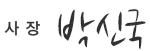

삼육식품 이념

CEO's Message
정유년을 맞아 삼육은 더욱더 도약하겠습니다.
"삼육을 사랑해주신 고객 여러분 진심으로 감사합니다!
삼육은 항상 온 세상 먹거리의 건강과 행복을 위해 최선을 다하겠습니다."
삼육식품은 1982년 식품 사업을 시작하여 1985년 처음으로 삼육두유를 출시한 이래 누구나 안심하고 먹을
수 있는 두유로 만들기 위해 노력하여 왔으며, 이제는 품질 좋고 안전하고 건강에 좋은 다양한 식품들을 만들기 위해 노력하고 있습니다.
삼육식품은 예나 지금이나 변함없이 추구하는 신념과 목표를 가지고 있습니다.
삼육식품의 자세
- 변하지 않는 마음
- 변화의 필요성
- 나눔의 정신
- 영원한 미래
- 시간이 가도 변하지 않는 마음
가족들에게 가장 좋은 음식을 먹이고 싶어 하는 어머니의 마음을 실현시키는 것이 삼육식품의 마음입니다.
창사 아래 30여년간 오직 한 길, 사람에게 보다 유익하고 자연 친화적인 순식물성 먹거리만을 개발하여 제공하는 것은,
건강과 행복을 고객 모두에게 나우어 주고 싶은, 변하지 않는 삼육식품의 마음입니다.- 변화의 필요성
변화는 이 시대에 필요 불가결한 요소입니다. 치열한 경쟁 사회 속에서 변화하지 않고는 내일을 기약할 수 없습니다.
삼육식품은 정직하고 안전한 먹거리를 위해 두유 업계 최초로 ISO 22000(식품안전 경영시스템) 인증과 HACCP(식품안전관리인증기준) 인증을 받았으며, 보다 품질 좋고 건강에 좋은 제품을 만들기위래 창조와 혁신의 정신으로 끊임없이 연구,개발하고 있습니다.
세상은 변하고 있고 식품에 대한 기대도 그 어느 때 보다 빠르게 변하고 있습니다.
이러한 기대에 부응하여 국내는 물론 세계에서 가장 안전하고 좋은 식품을 제공하기 위하여 끊임없이 변화하고 거듭나겠습니다.- 나눔의 정신
삼육식품은 국민의 기업으로써 우리만을 생각하지 않습니다.
수익의 대부분을 교육사업과 공익사업을 위하여 사용하고 있스며,다양한 봉사와 활동을 통하여 사회 공헌을 실천하고 있습니다.
이러한 노력이 더욱 확장되고 발전되어 온 세상이 건강하고 행복할 때까지 노력을 그치지 않겠습니다.- 영원한 미래의 대한 소망
이 세상에서 건강하고 행복하게 살기를 원하는 것은 누구나 가지고 있는 바람입니다.
그러나 삼육식품은 이 세상에서의 삶에만 관심을 가지고 있지 않습니다.이 세상의 삶은 아무리 훌륭하고 아름답다 할지라도 일시적이기 때문입니다.누구나 미래를 염려하지 않고, 기쁨과 감사로 영원한 가치와 소망을 가지고 살 수있도록 최선을 다하여 돕는 것이 삼육 식품의 최종적인 꿈이자 목표 입니다.
삼육식품 사장의 말씀
"위와 같은 꿈과 희망이 실현될 수 있도록 최선을 다하겠습니다. 지금까지 그랬던 것처럼
앞으로도 고객분들의 지속적인 사랑과 아낌을 부탁드립니다. 항상 감사합니다.
